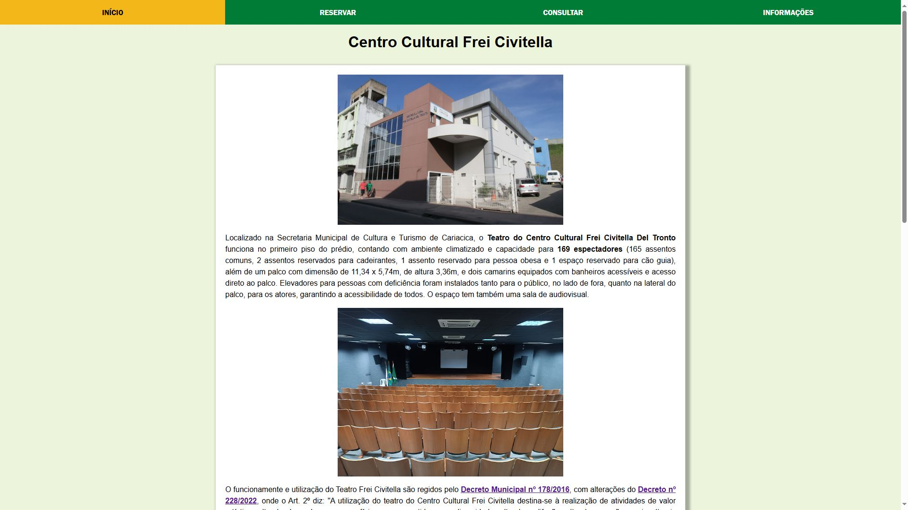
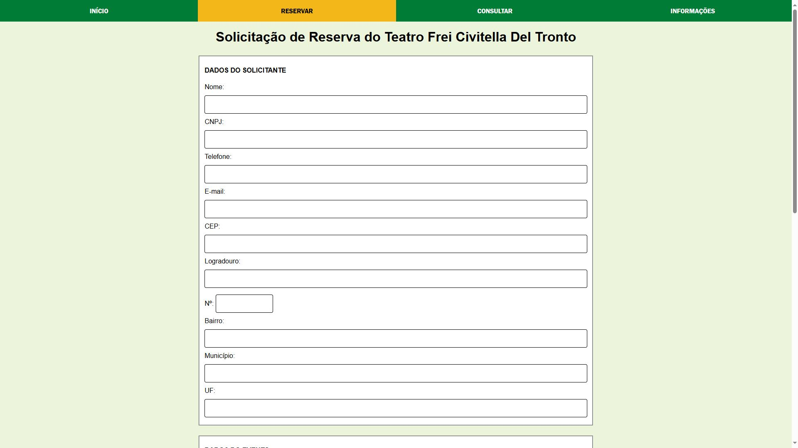
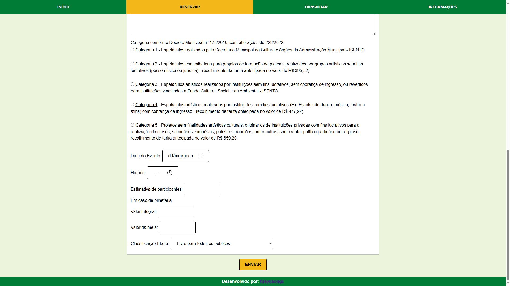
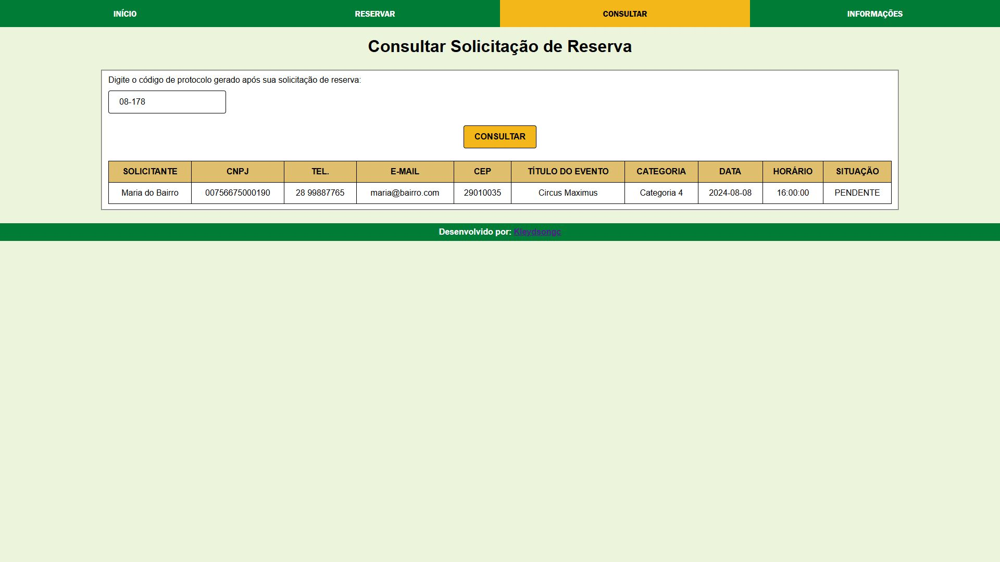
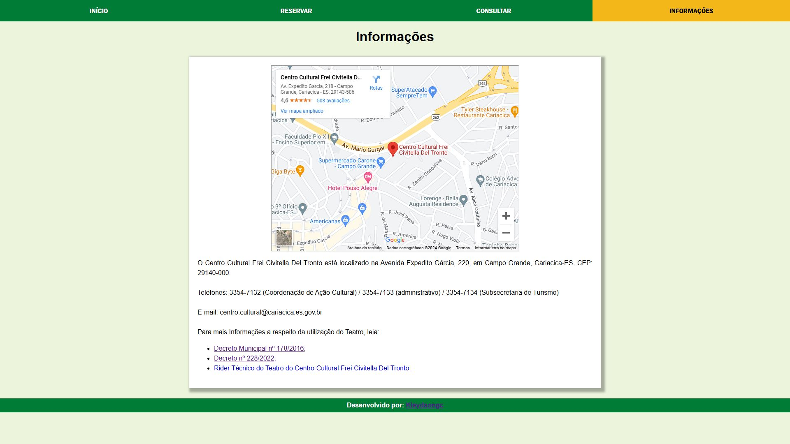

Trabalho apresentado à disciplina de Estágio Supervisionado do Curso de Tecnólogo em Análise e Desenvolvimento de Sistemas da Faculdade Multivix Serra,
como requisito para obtenção da avaliação semestral, consiste em conceber uma paltaforma online para agenda do Teatro Frei Civitella, administrado pela
Secretaria Municipal de Cultura e Turismo de Cariacica.
Apesar da utilização de ferramentas como Microsoft Office e e-mail, o controle da agenda do teatro é feito quase que inteiramente no papel, com os
responsáveis anotando numa planilha física as solicitações e reservas de datas.
Considerando que o controle da agenda se dá pelo Setor CAC (Coordenação de
Ação Cultural), e este é formado por 3 servidores, a carência de um meio
dinâmico para a organização resulta numa série de confusões para a Secretaria,
tendo diversas informações desencontradas entre as diferentes planilhas de
cada membro do setor. Todo o trâmite para a reserva é moroso, o interessado
em alugar o teatro encaminha um e-mail ao CAC, que responde orientando a
preencher uma ficha física de reserva e protocolar o pedido no Centro
Administrativo da Prefeitura de Cariacica, após protocolado, este é repassado
para a CAC via Processo Eletrônico, analisado e, enfim, respondido pelo e-mail.
A ideia de estabelecer uma plataforma web para o registro seria primeiramente
tornar a organização da agenda mais simples, cortando o papel e mergulhando
de vez no digital, trabalhando com uma única fonte de dados para a agenda,
fonte essa que seria de fácil acesso ao Secretário de Cultura e Turismo, que rege
e dá a palavra final na autorização de reserva. Mas não só isso, o lado do
interessado em alugar o espaço também seria beneficiado, onde, teria uma
forma mais amigável de solicitar e acompanhar sua solicitação.
Um site web em que um usuário qualquer possa conhecer sobre o Teatro do Centro Cultural Frei Civitella Del Tronto, e solicitar uma reserva de data e acompanhar sua solicitação. Tal solicitação é salva num banco de dados que armazena diversas outras solicitações e reservas, facilitando o controle e organização dos responsáveis pela agenda do Teatro.
Para este projeto de aplicação web, foram utilizadas as seguintes tecnologias:
Com o HTML e o CSS compondo a interface do usuário, recebendo os inputs de dados, o JavaScript atua em determinado momento para a formatação dos inputs de dados. Assim, com essa primeira parte atuando no front, o PHP e o MySQL se tornam responsáveis por comandar a parte backend, trabalhando com os dados recebidos, armazenando e fornecendo de volta ao usuário quando requisitado.
Acessando o site, o usuário se depara com a página “INÍCIO”, podendo ler uma breve apresentação do Teatro, especificações de espaço, normas e funcionamento, algumas imagens etc. Esta primeira tela serve como uma apresentação do Centro Cultural, para aqueles que terão seu primeiro contato.
Na parte de cima do site há uma barra de navegação, contendo três áreas fora a inicial. À direita de “INÍCIO” temos “RESERVAR”, página destinada àqueles que desejam solicitar uma data para utilização do Teatro, contendo um formulário para preenchimento das informações do solicitante e também do evento.
Ao fim desta tela se encontra o botão de envio, este que manda o conteúdo preenchido do formulário para o banco de dados, assim cadastrando a solicitação do usuário.
Ao enviar a solicitação, o usuário é redirecionado automaticamente à tela seguinte na barra de navegação, “CONSULTAR”, esta que é responsável pela consulta das solicitações já cadastradas. Quando o solicitante pressiona o botão “ENVIAR”, lhe é fornecido um código de protocolo o qual será utilizado para averiguar a situação de sua solicitação.
A página seguinte é a de “INFORMAÇÕES”, funcionando quase como um complemento da inicial, ela fornece algumas informações não repassadas no início, como a localização do Centro Cultural Frei Civitella Del Tronto, e um Rider Técnico do Teatro disponível para download.
 @kleydsongc
@kleydsongc
 kleydsongc@gmail.com
kleydsongc@gmail.com
 @kleydsongc
@kleydsongc